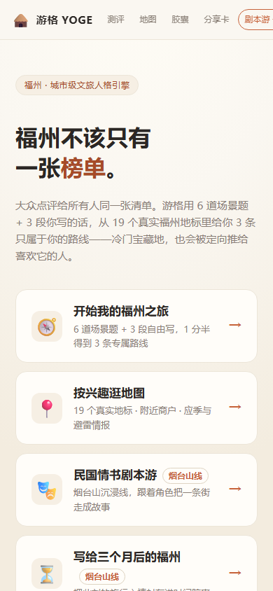
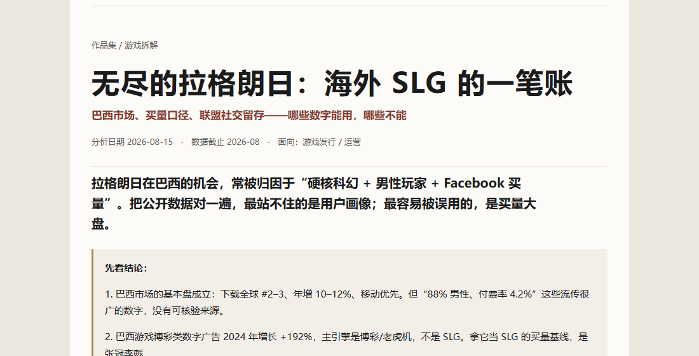

林宇浩
我不是科班做游戏的。我是玩出来的，后来自己动手做了一个。
01先看三个东西



02青玄：我具体改了什么
《青玄纪行》是在 MIT 开源的 vue-idle-xiuxian 上二次开发。上游只留下放置修炼的基础骨架（修炼循环、基础灵草 / 丹药表、几个 worker）；12 章故事、演武场与战技、市场 / 身份 / 关系、界面与场景人物图、战力与强化数值是我做的。
一个选择怎么落到正文里
第一章夜里闻到药味，玩家可以选“守规矩”或“循药味去看”。选后者，会记下后墙的细节；第四章火从后墙烧起来时，这段细节会被读到；第八章再兑现“位置”这个后果。选项不是点完就结束，它要在后面的章节里有回响。
一个真实 bug：存档读到负数
症状是读档后修为变成负数。查下来是写入端没有下限、载入端又直接信任存档。改法是两头都补：写入端把修为下限锁在 0；载入端遇到负值先做修复性载入，再重验。坏档仍然会被拦下，不会把错误洗成正常。
开局从五步缩到三步
原来的“天道抽签”三支签结果一样，玩家点了等于没点；“分堂三选一”没有实际效果。两个都删掉，开局从五步变三步。功能不是越多越好，先保住主线。
公开试玩（itch，海外）：yuhaolin2005.itch.io/qingxuan-volume1 · 原项目是 MIT 开源框架，不是我写的。
国内网络可能打不开；国内演示地址可另发。
03游格：48 小时里我砍了什么
福州城市文旅产品。用户回答 6 道场景题 + 3 段自由写，系统从 19 个真实福州地标里给出 3 条路线；线下有 6 个烟台山点位剧情、3 个结局。
我负责需求挖掘、验证、MVP 取舍、分工和验收。48 小时里只做“答题 → 路线 → 点位”这条主线；组队、时间胶囊、分享放到第二层。NFC / QR 用 ?spot=N 深链做点位入口，线下动线和线上推荐一一对应。
验收清单在开工前就写，不然最后只能靠感觉。上线前逐条走查：13/13 接口、10/10 浏览器检查、9 项部署自检、23/23 端到端用例。
游格没有排名，也没有获奖；政府采购只是商业模式设计，没有签约、没有落地。UI 和程序不是我做的。线上版本面试时可演示；代码和素材归团队，不公开仓库。
04拆解：不是把新闻拼在一起
三份拆解都按同一个顺序：先写判断，再拿公开数据核对；数据推翻判断就改，查不到来源就写“数据不可得”。每份都有“如果我在运营岗上会怎么做”和“用什么指标验收”。
拆解是 2026 年 8 月做的，数据截止同月。付费数据库拿不到的部分，我标了“数据不可得”，没有编。
05我平时怎么看游戏
TapTap 3000+ 天，玩过 126 款手游，跨 4 个品类，偏经营、放置、策略。看得多了，现在打开一个新游戏，会先问三个问题：
- 它让玩家每天回来做什么？是日常、是联盟、是抽卡，还是只是签到。
- 它的钱从哪来？谁在付、付完得到了什么、不付会不会被卡住。
- 它的版本在解决什么问题？新角色、新活动、新系统，是在补留存，还是在拉收入。
这三个问题，最后都会落到一张表上：观察、动作、指标。没有指标的动作，我不太信。
06我没做什么
- 游格的 UI 和程序是队友做的；我没有做实体物料和真人 NPC。
- 我的经验在国内发行 / 运营侧；海外社区、本地化、异业合作还没有实操。巴西国籍不等于海外业务经验。
- 我没有做过上线休闲游戏的完整策划；现在是从拆解和玩家侧往那边靠。
- 三份拆解用的是公开数据；付费数据库（data.ai、AppMagic、Statista 订阅段）拿不到的部分，我没有假装拿到。
这些不影响我把能做的事讲清楚，但面试时被问到，我会直接说“没做过”。
07联系与证据链接
证据链接
青玄公开试玩（itch，海外）：yuhaolin2005.itch.io/qingxuan-volume1
国内网络可能打不开；国内演示地址可在联系后另发。
GitHub 主页：github.com/YuhaoLin2005
国内网络可能打不开；项目摘要见本页和 PDF。
EvalScope PR #1576：github.com/modelscope/evalscope/pull/1576
已合入主仓；国内网络可能打不开，摘要见本页和 PDF。
三页 PDF 作品集会随简历附上；青玄为公开测试版（海外），国内演示地址可另发。